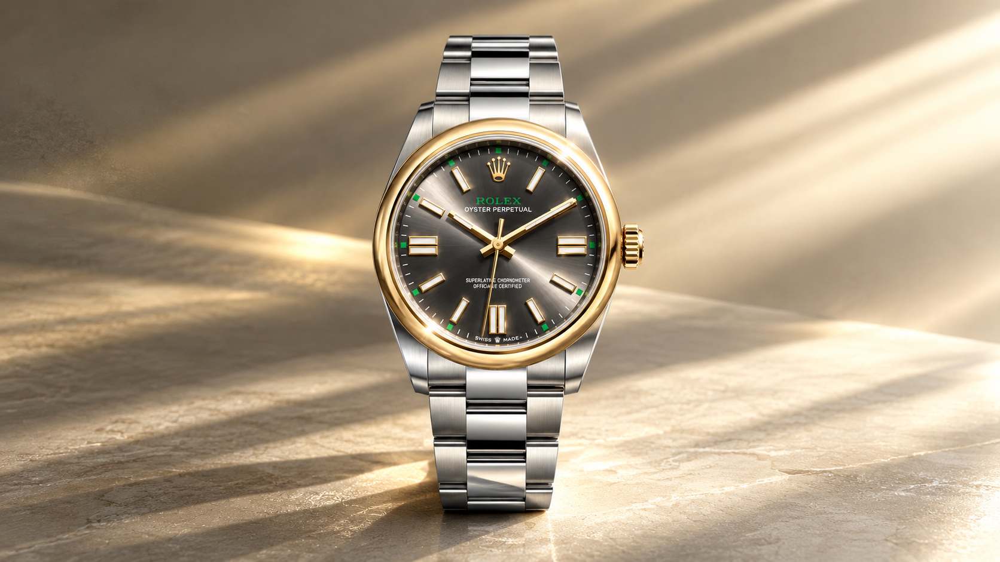
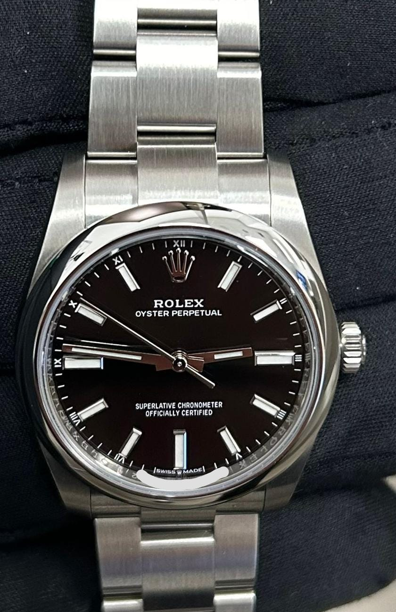

Oyster Perpetual
Three central hands, clear proportions and a date-free dial. Explore five sourced sizes and their distinct Rolex reference records.
Only the essentials, clearly arranged.
The current Oyster Perpetual range spans 28, 31, 34, 36 and 41 mm. Its three-hand design descends from the 1926 Oyster and the 1931 Perpetual rotor.
Only the essentials, clearly arranged.
Rolex describes the Oyster Perpetual with three central hands and an understated dial. Its current range spans 28, 31, 34, 36 and 41 mm, with multiple dial choices. The date-free face is a defining difference from the Datejust.
Rolex traces this lineage to the Oyster of 1926 and the original self-winding Oyster Perpetual wristwatch launched in 1931.

Choose a reference
Reference cards link to model-specific details. A reuse-cleared ref. 124200 black-dial photo appears only as family context; it does not depict the selected beige-dial record. Model cards use an original function schematic.
From Oyster to Perpetual.
Rolex's family overview connects the Oyster Perpetual with the waterproof Oyster introduced in 1926, and the self-winding wristwatch introduced in 1931. The modern collection carries that lineage in five case sizes and dial variations.
Rolex names, history and specifications remain attributed to Rolex. Venturo does not manufacture, certify, stock or sell Rolex watches. Prices and availability are omitted.
Reference tools
Independent Rolex reference guide · source pages checked 10 October 2026 · no Venturo manufacture, stock, price or retail offer.